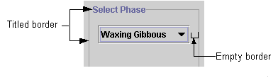

Feedback Form
|
|
Start of Tutorial > Start of Trail > Start of Lesson |
Search
Feedback Form |
LunarPhases
Topics covered in this example include: This next example, LunarPhases, is a more complicated example of how to use images in your application. As a bonus, you'll also see how to implement combo boxes. Here are two pictures of the
LunarPhasesapplication:In this program, the user chooses the lunar phase from the combo box, and the selected phase is shown in the lower panel. This is the first example we've seen that uses multiple panels to group components.
LunarPhaseshas three panels, as shown in the following figure.In the following code in the LunarPhasesconstructor, we construct all three panels and add the two subpanels (selectPanelanddisplayPanel) tomainPanel.When we put the subpanels in the main panel, it is the job of the main panel’s layout manager to make sure the subpanels are positioned correctly. The default layout manager for//Create the phase selection and display panels. selectPanel = new JPanel(); displayPanel = new JPanel(); //Add various widgets to the sub panels. addWidgets(); //Create the main panel to contain the two sub panels. mainPanel = new JPanel(); mainPanel.setLayout(new BoxLayout(mainPanel, BoxLayout.PAGE_AXIS)); mainPanel.setBorder(BorderFactory.createEmptyBorder(5,5,5,5)); //Add the select and display panels to the main panel. mainPanel.add(selectPanel); mainPanel.add(displayPanel);JPanelisFlowLayout, which simply positions components in the container from left to right in the order they’re added. In the previous code snippet, we used a layout manager calledBoxLayoutto position the subpanels more precisely.Using Layout Managers
The Java platform supplies six commonly used layout managers:BorderLayout,BoxLayout,FlowLayout,GridLayout,GridBagLayout, andSpringLayout.As we mentioned before, all
JPanelobjects useFlowLayoutby default. On the other hand, content panes (the main containers inJApplet,JDialog, andJFrameobjects) useBorderLayoutby default.As a rule, the only time you have to think about layout managers is when you create a
JPanelor add components to a content pane. If you don’t like the default layout manager that a panel or content pane uses, you can use a different one, either by specifying one when creating a panel or by invoking thesetLayoutmethod. For example, here’s the code for creating a panel that usesBorderLayout:Here’s an example of setting the layout manager of the default content pane:JPanel pane = new JPanel(new BorderLayout());Container contentPane = frame.getContentPane(); contentPane.setLayout(new FlowLayout());When you add components to a panel or a content pane, the arguments you specify to the add method depend on the layout manager that the panel or content pane is using. Layout is further discussed in Laying Out Components Within a Container
Version Note: We anticipate that in v1.5 invoking setLayout on a top-level container will have the same effect as invoking it on the top-level container’s content pane.Compound Borders
In previous examples, we've added a simple border to create a buffer of space around components. In this example, both subpanels,selectPanelanddisplayPanel, have a compound border, which consists of a titled border (an outlined border with a title) and an empty border (to add extra space), as shown in the following figure: The code for the selectPanel border follows. ThedisplayPanelsets its own border in the same way.// Add border around the select panel selectPanel.setBorder(BorderFactory.createCompoundBorder( BorderFactory.createTitledBorder("Select Phase"), BorderFactory.createEmptyBorder(5,5,5,5)));Combo Boxes
This example uses a combo box to present a group of choices to the user. Combo boxes can be either editable, with a text field that allows the user to enter a choice not in the group, or uneditable (the default), such as the one shown in the figure below.Combo boxes are useful for displaying one-of-many choices when space is limited. The following code in
LunarPhases.javacreates an uneditable combo box,
phaseChoices, and sets it up:The code initializes the combo box with an array of strings,JComboBox phaseChoices = null; ... //Create combo box with lunar phase choices. String[] phases = { "New", "Waxing Crescent", "First Quarter", "Waxing Gibbous", "Full", "Waning Gibbous", "Third Quarter", "Waning Crescent" }; phaseChoices = new JComboBox(phases); phaseChoices.setSelectedIndex(START_INDEX);phases. You can also put an array of icons in a combo box or initialize the combo box with a vector or custom data structure. In the last line of code, thesetSelectedIndexmethod specifies which phase of the moon should be shown when the program starts.Handling Events on a Combo Box
The combo box fires an action event when the user selects an item from the combo box's drop-down list. The following code fromLunarPhasesregisters and implements an action listener on the combo box:This action listener gets the newly selected item from the combo box, uses that item to find the image to display, and updates a label to display the image.phaseChoices.addActionListener(this); ... public void actionPerformed(ActionEvent event) { if ("comboBoxChanged".equals(event.getActionCommand())) { //Update the icon to display the new phase phaseIconLabel.setIcon(images[phaseChoices.getSelectedIndex()]); } }Multiple Images
In theCelsiusConverterprogram, we saw how to add a singleImageIconto a button. TheLunarPhasesprogram uses eight images. Only one image of the eight is used at a time, so we have a choice as to whether we load all the images up front or load the images as they are needed (known as "lazy image loading"). In this example, the images are all loaded up front when the class is constructed.Note the use offinal static int NUM_IMAGES = 8; final static int START_INDEX = 3; ImageIcon[] images = new ImageIcon[NUM_IMAGES]; ... //Get the images and put them into an array of ImageIcon. for (int i = 0; i < NUM_IMAGES; i++) { String imageName = "images/image" + i + ".jpg"; System.out.println("getting image: " + imageName); URL iconURL = LunarPhases.class.getResource(imageName); ImageIcon icon = new ImageIcon(iconURL); images[i] = icon; }getSystemResource, a method that searches the class path to find the image files. Loading image files is discussed in detail in How to Use Icons
|
|
Start of Tutorial > Start of Trail > Start of Lesson |
Search
Feedback Form |
Copyright 1995-2004 Sun Microsystems, Inc. All rights reserved.